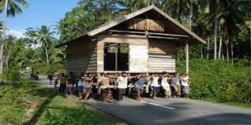
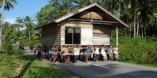
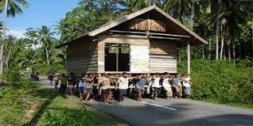

Tyler Yu
Current first year UCR student studying as a political science major. Various hobbies including sports, video games, vinyl collecting, and drawing. Looking to work in a government job after
graduation. Planning to find an internship over the summer, specifically involving my major. Born and raised in the Orange County area for my entire life by Korean parents who immigrated to America with their families. Went to high school at Sunny HIlls and graduated in 2023.
Involved in high school sports including soccer and track and field. I am an avid enjoyer of traveling, having gone to states and countries such as Canada, Mexico, South Korea, New York, and Utah while planning on more locations in the near future.
While not able to perform an instrument, I enjoy listening to music, artists such as Kendrick Lamar, Gorillaz, Anri, Anderson .Paak, Tyler The Creator, and Tomoko Aran. In terms of vinyls collected, they contain large amounts of hip hop and Japanese pop.
In college, currently a member of the Model United Nations, Soon Movement Global, Christians on Campus, and Greenwood Anime Society. Future jobs that interest me include politician, diplomat, lawyer, senator, and ambassador. Would like to also major in history if possible and in time.
I enjoy many different types of food including Korean, Japanese, Italian, American, Mexican, and Mediterranean. Dislikes include studying, raw vegetables, large parties, summer heat, and tests. Pronouns are he/him and have been described as laid back, funny, hard-working, and cooperative. I live a relatively simple and easy life right now, but acknowledge that I wish to also transition into a more productive and professional one later. When applying to the workforce, I can provide a positive, chill, adaptive, and cooperative attitude whilst applying myself to my work and helping others. Furthermore, I am an eager learner and always willing to experiment, expand my knowledge and horizons to brand new experiences whether that be in my personal life or for my career. Lover of animals, had multiple pets in my lifetime including three dogs, a fish and a rabbit, currently own one dog; at one point wished to become a zookeeper or work to study the environment. The reason why I’m interested in pursuing a career in political science/government is due to the nature and responsibilities that it carries.The ability to change the world and assist other people is a natural goal of mine that I wish to accomplish.
Worked a summer job performing manual labor for a computer company. Also volunteered at a local elementary school, working their events. Involved with Model United Nations, and preparing to be involved in future conferences and meetings.
Have prior experience in coding and animation from middle school, designing websites, creating and editing videos/movies, animating cartoon characters, and a little music creating. Numerous hours in other volunteering including serving food, cleaning up the community, and serving said community.
Not enough professional experience, but have applied to numerous jobs both on and off campus, hopeful in finding one soon.
Experience
Volunteering
• Volunteered at a local elementary school
• Assisted a fundraiser
• Performed manual labbor for a computer company
Soon Movement Global
• Christian organization
• Win, Build, Send
Model United Nations
• Organization that helps students engage and learn about the United Nations
• Current member at UCR
• Joining conferences and discussing issues
Education
UC Riverside
Portfolio
 

